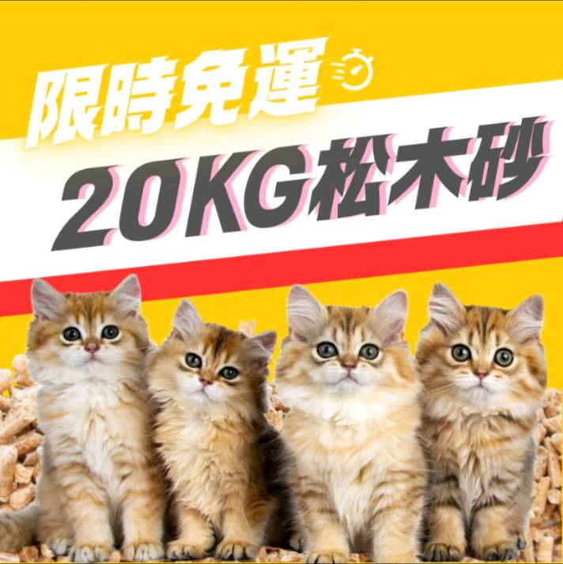

豪拜兒|貓砂推薦-健康環保的首選：100%純天然松木貓砂

在選擇貓砂時，我們常常關注的不僅是吸水性和除臭效果，更重要的是它對貓咪健康和家庭環境的影響。松木貓砂作為一種新興的選擇，以其天然材料、優異的吸水性能和環保特性贏得了越來越多貓主人的青睞。今天，讓我們一起來探索這款松木貓砂的獨特之處，以及為什麼它成為健康和環保意識下的理想選擇。
貓砂種類介紹
在選擇貓砂時，有多種不同的選擇，每種都有其獨特的特性和用途：
- 礦砂： 主要由膨潤土製成，具有良好的吸水性和除臭效果，但常常產生粉塵，可能影響貓咪的呼吸健康。
- 豆腐砂： 環保型貓砂，由豆腐渣製成，具有優良的吸水性和除臭效果，並且可以被自然分解，對環境友好。
- 水晶砂： 擁有強大的吸臭能力，但需要特殊的貓砂盆，不適合沖馬桶。
- 紙砂： 另一種環保型貓砂，由紙製成，可被環境自然分解，但吸水性較差，除臭效果一般。
- 花生砂： 使用天然花生殼製成，吸水性和除臭效果中等，同樣可以被自然分解。
- 松木砂： 以天然松木為原料製成，具有出色的吸水性和除臭效果，同時具備環保特性，是健康且可持續的選擇。
選購指南
在選購貓砂時，可以考慮以下幾個關鍵因素：
- 環保性： 如果您關心環境問題，松木砂是一個極具環保價值的選擇，因為它是由天然材料製成，且可以被自然分解或用於施肥。
- 健康安全： 確保貓砂不含有害化學物質，並且能保持貓咪和家人的呼吸系統健康，這對於長期使用至關重要。
- 吸水性和除臭效果： 這兩個特性直接影響貓砂的性能。松木砂因其獨特的物理特性，能夠快速吸收尿液並鎖住氣味分子，保持環境清新。
- 可清潔性： 選擇易於清理的貓砂，能夠減少每天的維護工作，同時保持貓砂盆的衛生。
- 貓咪偏好： 有些貓咪對於特定種類的貓砂有偏好，因此通過多次嘗試，找到最適合您貓咪的產品是很重要的。
貓砂小知識
- 清潔頻率： 定期清理貓砂盆非常重要，建議每天至少清理一次固體廢物，並每週更換一次貓砂，這有助於保持貓砂盆的乾淨和遠離異味。
- 貓砂的位置： 將貓砂盆放置在貓咪容易到達的安靜地點，遠離食物和飲水的地方，以提供貓咪隱私和安全感。
- 儲存方法： 將貓砂存放在乾燥通風的地方，避免陽光直射和潮濕，這有助於保持貓砂的吸水性能和防止產生異味。
推薦產品：100%純天然松木顆粒貓砂
松木顆粒貓砂不僅擁有優異的吸水性和除臭效果，更因其天然材料和環保特性而受到廣泛推崇。由高壓成型、加熱殺菌製成，不僅安全無害，還能快速崩解尿液並有效鎖住異味。此款貓砂符合國際兒童玩具標準，經德國萊茵檢測合格，不含甲醛、殺蟲劑、防腐劑及重金屬殘留，絕對是現代家庭的健康首選。
特色
- 天然材料製成： 松木貓砂採用100%天然松木粒製成，不含有害化學物質，安全無害，對貓咪和家庭成員的健康無害。
- 優異的吸水性能： 松木顆粒具有出色的吸水能力，能夠快速吸收尿液，有效防止貓砂盆內的潮濕，保持乾爽清潔。
- 高效的除臭效果： 物理特性使得松木貓砂能夠迅速鎖住空氣中的氣味分子，有效降低異味，保持家居空氣清新。
- 環保可持續： 這種貓砂不僅能夠自然分解，還可以用於施肥，降低對環境的負擔，符合現代社會對環保產品的需求。
- 健康安全認證： 符合國際兒童木製玩具檢測標準，並經過德國萊茵檢測合格，無甲醛、無殺蟲劑、無防腐劑及無19項重金屬殘留，可信賴。
- 使用方便且經濟實惠： 松木貓砂使用後量少時，可以直接投入馬桶或施肥，不僅清理方便，還節省了清理成本和時間。
- 顧客的信任與口碑
超過萬筆購買，並且大部分都是五星好評，顯示了廣大飼主對這款產品的認可和滿意。良好的口碑和用戶體驗是產品持續熱銷的重要因素。
規格
- 成份： 100%天然松木
- 容量： 20公斤/(±5%)
- 規格： 8 ｍｍ
- 顆粒長度： 1 - 3ｃｍ
總括來說，松木貓砂結合了自然材料的安全性、優異的性能和環保可持續的特性，這款貓砂，無論是品質或是價格，都相當值得推薦，事不宜遲，點擊下方連接前往賣場，讓貓咪享受最好的呵護吧！
100%天然松木貓砂：點我購買